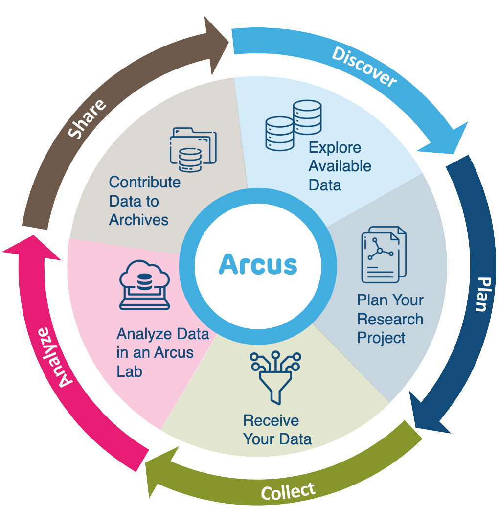
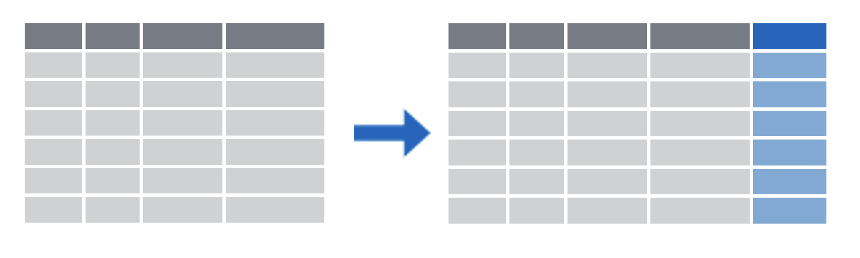

01:00
Welcome
These slides available at: https://arcus.github.io/first_steps_in_r_rstudio_skills_series/session_4.html
- Use keyboard arrow keys to
- advance ( → ) and
- go back ( ← )
- Type “s” to see speaker notes
- Type “?” to see other keyboard shortcuts
As always, I’d like to encourage you to open these slides on your own browser, and this first slide helps with tips for you to use the slide deck.
About Arcus / Your Presenter
Arcus is an initiative by the Research Institute aimed at promoting data discovery and reuse and increasing research reproducibility.
- Arcus app: https://arcus.chop.edu
- Arcus Sharepoint site: https://chop365.sharepoint.com/sites/Arcus
Among the many teams in Arcus, I represent Arcus Education!

:::
Thanks again for joining us. As you know, I’m ______ [add pronouns here if you want], and I’ll be leading today’s session.
I’ve already talked about this slide previously, and you have these links, so let’s keep going.
Arcus Education
Arcus education provides data science training to researchers …
(and often this is useful to non-researchers too!).
https://arcus.chop.edu/i-want-to/arcus-education
Email us! arcus-education@chop.edu
We’ve already discussed this previously in other workshop sessions, so I’m going to skip this as well. You can always email us at arcus dash education at chop dot edu to ask about how we can help you!
First Steps in R and RStudio
Arcus Education provides “Skills Series” for the entire CHOP community.
This Skills Series is a 5-session series aimed at helping you take your first steps in R and RStudio!
- Session 1: Review and Setup
- Session 2: Projects and File Ingestion
- Session 3: Exploring Data Visually, Using ggplot2
- Session 4: Selecting Data Using dplyr
- Session 5: Putting it All Together: Communicating
Just a reminder about what you’re in today.
This is a five-session series, and our goal is to help you get started taking your first steps. Today, we’re in session four, so we’re in the second half of our work together!
Session 4 Itinerary
Selecting Data Using dplyr
- Selecting columns
- Filtering rows
- Creating new columns
Goals:
- Describe what a “factor” variable is in R and why it’s important to use it
- Use “select” and “filter” to subset data
- Use “group by” and “summarize” to get group-level statistics
What are we going to do today? We’re going to learn about the dplyr package and use it to reshape data, specifically by selecting columns of interest, filtering rows you want to preserve, and creating new columns of data.
My goals for you this session are the following. I really want you to understand what a factor variable is in R and why it can be useful to transform some variables to factor. I want you to successfully use select and filter functions, and I want you to use group by and summarize to get some group level statistics before we leave today.
But first: data types
Some atomic data types in R:
- character: “ABC”, “True”, “123”
- integer (class = numeric): 123, -3, 0
- double (class = numeric): 123.0, -3.33
- logical: True, False
Then there’s the factor – it’s a data structure but acts like a data type in a lot of ways
typeof() can give you the data type
In today’s exercises, I’m going to have you read in the cirrhosis data and do some corrections related to data types, so before anything else, I want to briefly talk about data types in R. There are lots of books and resources that go into data types in depth, so I won’t do that here. There are a couple of numeric types, one for integers and one for decimals, which is called double, and a character type for strings, but what I really want to draw your eye to is that there are special ways to store some kinds of data that you might not have thought of. For example, there is a logical type which holds truth values, namely, True and False. Not the words “True” and “False” – those would be character – , but the abstract values of True and False.
And there’s also this thing called a factor, which is pretty useful for categorical data. And if you collect data where there are categories, like sex or race or comorbid condition, you want to know about factors.
Factors
Factors are categorical data. Categorical / factor data are data in which every observation falls into a set number of values (like drug/placebo, male/female/intersex, etc.)
- Ordered:
- small / medium / large
- stage 1 / stage 2 / stage 3 / stage 4
- Unordered:
- benign / malignant
- Delaware / New Jersey / Pennsylvania
In the exercises you’ll be working in today, I want you to use a function we’re going to learn in a few minutes to change some character data, some letters, into factors, and it’s important to understand what factors are and why they can be useful and important.
Factors are categorical data. Factor data are data in which every observation falls into a set number of values. Some categories have a kind of internal order, like small, medium, and large, or disease stage. Some categories don’t have any kind of internal order, like benign or malignant labels or U.S. state.
If your data can be described in a set number of discrete categories, you can make that data into a factor variable in R. And often, you want to! It can make it easy to enforce the number of categories and make sure that new data isn’t introduced because of misspelling, accidentally creating a new category you didn’t want, for example.
Factors?
Are these numbers, characters, or factors?
- 19147
- 19103
- 19146
- 19128
How we treat these can matter to R in how it treats these data in terms of modeling!
Let’s look at this data. What are these? Are they numbers? Characters? Factors? I haven’t told you what they represent. If these are measurements, like weight in grams, then maybe we should leave these as numbers. But I suspect these are Philadelphia area postal codes.
And if that’s the case, they aren’t really numbers. Yes, these are codes that are made up using numerals, but they don’t represent quantities. They’re just categorical labels for areas of land. We could have called these A, B, C, or purple zone, green zone, and tan zone just as easily.
But if we leave them as numbers, R might try to treat them as numbers and try to account for them that way in a model. A model that tries to treat these as a measure of something that a patient has more or less of would be a bad model that could behave unpredictably.
dplyr
a grammar for transforming data frames
library(dplyr) OR library(tidyverse)
OK, so now that we have talked about data types, let’s get into the main topic of the day. dplyr is a play on words with “data” and the useful tool we all have in our toolbox, a pai rof “pliers”. The various functions we’ll use, today are all functions that belong to the dplyr package.
Just as a reminder, in R, we bring in the functionality of a package by using the library() command. Because dplyr forms part of the tidyverse, we can bring in the useful functions of dplyr by either using the library(dplyr) command or the library(tidyverse) command.
As we will see in this last section, each dplyr function takes a data frame, does something with it, and then returns a modified data frame as its output. Because of this, dplyr functions can be strung together to create powerful data analysis pipelines in just a few lines of code.
Subsetting Columns vs Rows
select()

filter()

Often, you have a large data frame but want to display or use data from only a small part of it, or you want to pull out some of the data out for a separate use. The dplyr package, part of the larger tidyverse set of packages, works great for this purpose.
Let’s look at how you can subset a data frame, that is, choose only certain columns and/or rows from that data, by using dplyr.
dplyr provides two functions for subsetting data frames: select() for subsetting columns, and filter() for subsetting rows:
select() reshapes data so that it includes only the columns you specify.
filter() reshapes data so that it includes only the rows that meet your conditions.
select()
Choose some columns to preserve in a selection.
select(data_frame, [column or columns])
Let’s look at select() first. The select() function extracts columns from a data frame, using the columns as argument(s).
select() takes a data frame as its first argument. After that it takes one or more arguments that specify the names of the columns that you want to pick.
select()
Before
| ID | N_Days | Status | Drug | Age | Sex | … | Tryglicerides | Platelets | Prothrombin | Stage |
|---|---|---|---|---|---|---|---|---|---|---|
| 1 | 400 | D | D-penicillamine | 21464 | F | … | 172 | 190 | 12.2 | 4 |
| 2 | 4500 | C | D-penicillamine | 20617 | F | … | 88 | 221 | 10.6 | 3 |
| 3 | 1012 | D | D-penicillamine | 25594 | M | … | 55 | 151 | 12 | 4 |
| 4 | 1925 | D | D-penicillamine | 19994 | F | … | 92 | 183 | 10.3 | 4 |
| 5 | 1504 | CL | Placebo | 13918 | F | … | 72 | 136 | 10.9 | 3 |
So we’re going to start with a data frame. You can see here that I haven’t put in all the rows and columns, the ellipses here represent columns I haven’t included, and I’ve only put in the first five rows. But hopefully this is recognizably the cirrhosis dataset.
Let’s say I want a version of this data that only preserves a few columns of this dataset.
select()
Before
| ID | N_Days | Status | Drug | Age | Sex | … | Tryglicerides | Platelets | Prothrombin | Stage |
|---|---|---|---|---|---|---|---|---|---|---|
| 1 | 400 | D | D-penicillamine | 21464 | F | … | 172 | 190 | 12.2 | 4 |
| 2 | 4500 | C | D-penicillamine | 20617 | F | … | 88 | 221 | 10.6 | 3 |
| 3 | 1012 | D | D-penicillamine | 25594 | M | … | 55 | 151 | 12 | 4 |
| 4 | 1925 | D | D-penicillamine | 19994 | F | … | 92 | 183 | 10.3 | 4 |
| 5 | 1504 | CL | Placebo | 13918 | F | … | 72 | 136 | 10.9 | 3 |
Using the select function
select(cirrhosis_study, ID, N_Days, Status, Drug) (prints to screen) new_thing <- select(cirrhosis_study, ID, N_Days, Status, Drug) (saves it)
Let’s examine the code on this slide.
This select statement will take the data frame cirrhosis_data, and return a new data frame that only has the columns I indicate.
An important point to note here is that select will not modify the original data frame but simply returns the altered data frame you asked for. It will simply print out the result in the console or in your R Markdown document. If you want to capture the modified data frame you need to assign it to a named object using the arrow operator.
In my case, I’m telling the select function to only hang on to four columns in the cirrhosis_study data frame, and I mention them by name. Note that I don’t have to put quotes around these column names, because they refer to objects, in this case, whole columns that the select statement already knows about.
select()
Before
| ID | N_Days | Status | Drug | Age | Sex | … | Tryglicerides | Platelets | Prothrombin | Stage |
|---|---|---|---|---|---|---|---|---|---|---|
| 1 | 400 | D | D-penicillamine | 21464 | F | … | 172 | 190 | 12.2 | 4 |
| 2 | 4500 | C | D-penicillamine | 20617 | F | … | 88 | 221 | 10.6 | 3 |
| 3 | 1012 | D | D-penicillamine | 25594 | M | … | 55 | 151 | 12 | 4 |
| 4 | 1925 | D | D-penicillamine | 19994 | F | … | 92 | 183 | 10.3 | 4 |
| 5 | 1504 | CL | Placebo | 13918 | F | … | 72 | 136 | 10.9 | 3 |
Using the select function
select(cirrhosis_study, ID, N_Days, Status, Drug)
After
| ID | N_Days | Status | Drug |
|---|---|---|---|
| 1 | 400 | D | D-penicillamine |
| 2 | 4500 | C | D-penicillamine |
| 3 | 1012 | D | D-penicillamine |
| 4 | 1925 | D | D-penicillamine |
| 5 | 1504 | CL | Placebo |
Any questions about that?
Participation Time!
Which of the following will select the Ascites column from the cirrhosis_study data frame and capture the result in a data frame named newdata?
A) newdata = select(Ascites, cirrhosis_study)
B) newdata <- select(cirrhosis_study, Ascites)
C) select(newdata, cirrhosis_study, Ascites)
D) newdata <- select(cirrhosis_study, ascites)
E) Both B and D
Great, we have some folks saying [whatever], others are suggesting [whatever]. The answer is B.
A isn’t correct, because the arguments are in the wrong order. The first argument in the tidyverse functions we’re studying today is always going to be the data frame you want to work with. That means the first argument should be cirrhosis.
C isn’t correct because you have to use the assignment arrow to save the new, one-column-only data frame to an object called newdata. You don’t pass the name you want to apply to the object as an argument.
D isn’t right because capitalization matters!
So E is also clearly incorrect.
filter()
Choose some conditions to filter the rows you want to keep.
filter(data_frame, [some condition or conditions for rows])
One of the most important dplyr functions to know about is filter(). filter() extracts rows, and it does that based on logical criteria, or a condition that can be evaluated to be true (keep that row as part of our subset) or false (don’t keep that row).
Like select(), filter() takes a data frame as its first argument. The second argument is a condition or logical test. R then performs that logical test on each row of the dataset and returns all rows in which the logical test was true.
To extract rows that meet logical criteria, we write code that looks like this, and we’ll replace the three dots with one or more logical conditions that the row has to meet.
filter()
Before
| ID | N_Days | Status | Drug | Age | Sex | … | Tryglicerides | Platelets | Prothrombin | Stage |
|---|---|---|---|---|---|---|---|---|---|---|
| 1 | 400 | D | D-penicillamine | 21464 | F | … | 172 | 190 | 12.2 | 4 |
| 2 | 4500 | C | D-penicillamine | 20617 | F | … | 88 | 221 | 10.6 | 3 |
| 3 | 1012 | D | D-penicillamine | 25594 | M | … | 55 | 151 | 12 | 4 |
| 4 | 1925 | D | D-penicillamine | 19994 | F | … | 92 | 183 | 10.3 | 4 |
| 5 | 1504 | CL | Placebo | 13918 | F | … | 72 | 136 | 10.9 | 3 |
Let’s take a look at an example. Here I have that same shortened version of our cirrhosis data frame, and I want only to look at the subjects who unfortunately died during the course of the study. I’ll filter by their Status, and I want their status to be equal to the letter D.
filter()
Before
| ID | N_Days | Status | Drug | Age | Sex | … | Tryglicerides | Platelets | Prothrombin | Stage |
|---|---|---|---|---|---|---|---|---|---|---|
| 1 | 400 | D | D-penicillamine | 21464 | F | … | 172 | 190 | 12.2 | 4 |
| 2 | 4500 | C | D-penicillamine | 20617 | F | … | 88 | 221 | 10.6 | 3 |
| 3 | 1012 | D | D-penicillamine | 25594 | M | … | 55 | 151 | 12 | 4 |
| 4 | 1925 | D | D-penicillamine | 19994 | F | … | 92 | 183 | 10.3 | 4 |
| 5 | 1504 | CL | Placebo | 13918 | F | … | 72 | 136 | 10.9 | 3 |
Using the filter function
filter(cirrhosis_study, Status == "D")
Notice that I put the letter D in quotes, because it’s possible that I have a variable or a data frame in my environment. For example, maybe D is set equal to the name “David”, or something like that. But that’s not what I want. I’m not referring to some object called D that R should be looking for, I mean the literal letter D. So I put it in quotes.
Notice that we’re using a double equals here. That’s very important!
filter()
Before
| ID | N_Days | Status | Drug | Age | Sex | … | Tryglicerides | Platelets | Prothrombin | Stage |
|---|---|---|---|---|---|---|---|---|---|---|
| 1 | 400 | D | D-penicillamine | 21464 | F | … | 172 | 190 | 12.2 | 4 |
| 2 | 4500 | C | D-penicillamine | 20617 | F | … | 88 | 221 | 10.6 | 3 |
| 3 | 1012 | D | D-penicillamine | 25594 | M | … | 55 | 151 | 12 | 4 |
| 4 | 1925 | D | D-penicillamine | 19994 | F | … | 92 | 183 | 10.3 | 4 |
| 5 | 1504 | CL | Placebo | 13918 | F | … | 72 | 136 | 10.9 | 3 |
Using the filter function
filter(cirrhosis_study, Status == "D")
After
| ID | N_Days | Status | Drug | Age | Sex | … | Tryglicerides | Platelets | Prothrombin | Stage |
|---|---|---|---|---|---|---|---|---|---|---|
| 1 | 400 | D | D-penicillamine | 21464 | F | … | 172 | 190 | 12.2 | 4 |
| 3 | 1012 | D | D-penicillamine | 25594 | M | … | 55 | 151 | 12 | 4 |
| 4 | 1925 | D | D-penicillamine | 19994 | F | … | 92 | 183 | 10.3 | 4 |
A Potential Pitfall!
Error: Problem with filter() input ..1. x Input ..1 is named. ℹ This usually means that you’ve used = instead of ==.
OR
Error: unexpected ‘=’
OR
invalid (do_set) left-hand side to assignment
One common issue to be aware of is the difference between the single equals and the double equals operators.
In R, using a single equals sign assigns a value. It demands, “make these things equal.”
The double equals sign does not assign, but compares. It asks “are these things equal?”.
That’s why we use double equals in the context of a logical test that compares two values.
If you use the wrong kind of equals, you’ll get an error. This is a very common mistake, and one you’re almost guaranteed to accidentally commit at one point or another! This is what some of those scary errors look like!
Logical Operators
| logical expression | means | example |
|---|---|---|
x < y |
less than | Cholesterol < 200. |
x > y |
greater than | N_Days > 3000 |
x == y |
equal to | Ascites == Edema |
x <= y |
less than or equal to | Bilirubin <= 2.0 |
x >= y |
greater than or equal to | Copper >= 100 |
x != y |
not equal to | Status != "D". |
is.na(x) |
a missing value | is.na(Platelets) |
!is.na(x) |
not a missing value | !is.na(SGOT) |
Here are some important logical operators to know about. They will all come in handy when you’re filtering rows of a data frame. x and y each represent expressions, which could be column names or constant values or a combination thereof.
We’ve already seen the double equals. There are also the less than or and greater than operators. These operators also come as “or equal to” versions.
Use exclamation point equals (some people say “bang equals”) if you want to select rows in which a value is not equal to another value.
is.na() is how you can test for missing values (NA in R). This comes in handy when you want to remove missing values from your data, which we’ll see later.
Your Turn
Which of these would successfully filter the cirrhosis_study data frame to only subjects who received the placebo?
A) filter(cirrhosis_study, Drug == Placebo)
B) filter(cirrhosis_study, Drug = "Placebo")
C) filter(cirrhosis_study, Drug == "Placebo")
D) filter(cirrhosis_study, drug == "Placebo")
01:00
Here we have another multiple choice to see if you’re on your toes. Only one of these is correct? Which one? Post what you think in chat.
A is wrong because “Placebo” is a character string (it’s not a named object or a number, it’s a string that needs to be quoted). B is wrong because you’re trying to do a comparison with a single equals. C is correct! D is wrong because of capitalization.
The Pipe Operator %>% or |>
The pipe operator is %>% (from the magrittr package, part of the tidyverse), or |> (part of base R starting with version 4.1.0).
Let’s talk about the pipe operator, which we can use to build pipelines!
One of the most powerful concepts in the tidyverse suite of packages is the pipe operator, which is written in two possible ways:
- percent, greater than, percent (
%>%) (this is the original pipe which gets included as part ofdplyrandtidyverse) - vertical pipe, greater than (
|>) (this is a newer option, and is now “native”, meaning it comes from base R, if you’re using R version 4.1.0 or later)
The Pipe Operator

Passes the object on the left as the first argument to the function on the right
cirrhosis %>% filter(Bilirubin <= 3) is equivalent to filter(cirrhosis_study, Bilirubin <= 3)
OR, if you use the newer pipe:
cirrhosis |> filter(Bilirubin <= 3) is equivalent to filter(cirrhosis_study, Bilirubin <= 3)
Both pipe operators pass the object on its left as the first argument to the function on its right.
In this workshop, we’ll use both kinds of pipe in code examples and quiz questions, so that you get used to seeing them both.
Those two lines of code are equivalent.
In both cases we’re taking the data frame, passing it as the first argument to the filter() function, and adding a condition that we’re filtering by.
We could say the same thing of the second line of blue code on your screen which uses the newer pipe.
Pipes make Output into the next Input!
cirrhosis %>%
filter(Copper >= 100) %>%
select(Bilirubin, Platelets, Stage)- Start with the
cirrhosisdata frame. THEN, to that: - Filter so that we get only certain rows THEN, to that:
- Select so that we get only certain columns.
Here’s why the pipe (%>% or |>) is so useful.
“Tidy” functions like select(), filter(), and others we’ll see later always have as first argument a data frame, and they always return a data frame as well. Data frame in, data frame out.
This makes it possible to create a pipeline in which a data frame object is handed from one dplyr function to the next. The data frame result of step 1 becomes the data frame starting point for step 2, then the result of step 2 becomes the starting point for step 3, and so on.
You might wonder why we’ve put each step in its own line. Is this a requirement? No, it’s not. Many R users like to use whitespace (new lines, tabs, spaces, indents) to make their code more human readable.
By connecting logical steps, you can get a pipeline of data analysis steps which are concise and also fairly human readable. You can think of the pipe symbol as the word “then…”, describing the steps in order.
This approach to coding is powerful because it makes it much easier for someone who doesn’t know R well to read and understand your code as a series of instructions.
I want to ask you… could I change the order of the select and filter steps here? Why or why not?
Your Turn
Rewrite (in your head or jot down) the following statement with a pipe:
select(mydata, first_name, last_name)
01:00
OK, I want to see if you grasp this concept, as it’s pretty important, moving forward. How would you rewrite the statement on your screen, select mydata comma first name comma last name, and use the pipe syntax instead? Share what you think the answer is.
…
Yep, that’s exactly right! You’d write mydata, the pipe symbol, and then select first name comma last name. Any questions on that?
Your Turn
Rewrite (in your head or jot down) the following statement with a pipe:
select(mydata, first_name, last_name)
my_data %>% select(first_name, last_name)
(OR you might also see or use)
my_data |> select(first_name, last_name)
mutate()
Create new or updated, optionally calculated columns.
mutate(data_frame, [name = value])
Let’s say you want to add a new column to your data frame, or update a column by changing it in some way (say, convert kilograms to pounds). dplyr has a function for that, too!
mutate() is an extremely useful dplyr function, and you can use it to make new variables / columns. That’s what we’ll use it for here. You can also use mutate() to change existing columns (say, turn an entire column lowercase or round or scale a numeric value).
Like all dplyr functions, mutate() takes a data frame as its first argument. After that, you tell it what to name the new column and what should be in it. This is done using name-value expressions.
In name-value expression, you have:
- a name
- an equals sign (
=), and - a value
mutate()
Before
| ID | N_Days | Status | Drug | Age | Sex | … | Tryglicerides | Platelets | Prothrombin | Stage |
|---|---|---|---|---|---|---|---|---|---|---|
| 1 | 400 | D | D-penicillamine | 21464 | F | … | 172 | 190 | 12.2 | 4 |
| 2 | 4500 | C | D-penicillamine | 20617 | F | … | 88 | 221 | 10.6 | 3 |
| 3 | 1012 | D | D-penicillamine | 25594 | M | … | 55 | 151 | 12 | 4 |
| 4 | 1925 | D | D-penicillamine | 19994 | F | … | 92 | 183 | 10.3 | 4 |
| 5 | 1504 | CL | Placebo | 13918 | F | … | 72 | 136 | 10.9 | 3 |
OK, so let’s say that I want to understand more intuitively how long my subjects stayed in the trial, and I want to see the number of years, not just the number of days, they stayed. I want to make a new column that I’ll create by converting N_Days to Years by dividing that by 365.25 and then rounding to two decimal places.
mutate()
Before
| ID | N_Days | Status | Drug | Age | Sex | … | Tryglicerides | Platelets | Prothrombin | Stage |
|---|---|---|---|---|---|---|---|---|---|---|
| 1 | 400 | D | D-penicillamine | 21464 | F | … | 172 | 190 | 12.2 | 4 |
| 2 | 4500 | C | D-penicillamine | 20617 | F | … | 88 | 221 | 10.6 | 3 |
| 3 | 1012 | D | D-penicillamine | 25594 | M | … | 55 | 151 | 12 | 4 |
| 4 | 1925 | D | D-penicillamine | 19994 | F | … | 92 | 183 | 10.3 | 4 |
| 5 | 1504 | CL | Placebo | 13918 | F | … | 72 | 136 | 10.9 | 3 |
Using the mutate function
mutate(cirrhosis_study, N_Years = round(N_Days / 365.25, 2))
I’ll give my new column a name, N_Years. I don’t really love capitals in my variable names, but I think consistency is the lesser evil here. And I’ll give the calculation. Take the N_Days column, divide it by 365.25, round that to two decimal places, and that’s the value of the new column.
mutate()
Before
| ID | N_Days | Status | Drug | Age | Sex | … | Tryglicerides | Platelets | Prothrombin | Stage |
|---|---|---|---|---|---|---|---|---|---|---|
| 1 | 400 | D | D-penicillamine | 21464 | F | … | 172 | 190 | 12.2 | 4 |
| 2 | 4500 | C | D-penicillamine | 20617 | F | … | 88 | 221 | 10.6 | 3 |
| 3 | 1012 | D | D-penicillamine | 25594 | M | … | 55 | 151 | 12 | 4 |
| 4 | 1925 | D | D-penicillamine | 19994 | F | … | 92 | 183 | 10.3 | 4 |
| 5 | 1504 | CL | Placebo | 13918 | F | … | 72 | 136 | 10.9 | 3 |
Using the mutate function
mutate(cirrhosis_study, N_Years = round(N_Days / 365.25, 2))
After
| ID | N_Days | Status | Drug | Age | Sex | … | Tryglicerides | Platelets | Prothrombin | Stage | N_Years |
|---|---|---|---|---|---|---|---|---|---|---|---|
| 1 | 400 | D | D-penicillamine | 21464 | F | … | 172 | 190 | 12.2 | 4 | 1.1 |
| 2 | 4500 | C | D-penicillamine | 20617 | F | … | 88 | 221 | 10.6 | 3 | 12.32 |
| 3 | 1012 | D | D-penicillamine | 25594 | M | … | 55 | 151 | 12 | 4 | 2.77 |
| 4 | 1925 | D | D-penicillamine | 19994 | F | … | 92 | 183 | 10.3 | 4 | 5.27 |
| 5 | 1504 | CL | Placebo | 13918 | F | … | 72 | 136 | 10.9 | 3 | 4.12 |
And you can see that it’s put it at the end here. But let me show you a trick on how to fix that!
Piping it all together
- Reduce columns to just a few
- Reduce rows ()
- Add new column
- Reorder the columns so it makes better sense
Piping it all together
Before
| ID | N_Days | Status | Drug | Age | Sex | … | Tryglicerides | Platelets | Prothrombin | Stage |
|---|---|---|---|---|---|---|---|---|---|---|
| 1 | 400 | D | D-penicillamine | 21464 | F | … | 172 | 190 | 12.2 | 4 |
| 2 | 4500 | C | D-penicillamine | 20617 | F | … | 88 | 221 | 10.6 | 3 |
| 3 | 1012 | D | D-penicillamine | 25594 | M | … | 55 | 151 | 12 | 4 |
| 4 | 1925 | D | D-penicillamine | 19994 | F | … | 92 | 183 | 10.3 | 4 |
| 5 | 1504 | CL | Placebo | 13918 | F | … | 72 | 136 | 10.9 | 3 |
As per usual, we’ll start here.
Piping it all together
Before
| ID | N_Days | Status | Drug | Age | Sex | … | Tryglicerides | Platelets | Prothrombin | Stage |
|---|---|---|---|---|---|---|---|---|---|---|
| 1 | 400 | D | D-penicillamine | 21464 | F | … | 172 | 190 | 12.2 | 4 |
| 2 | 4500 | C | D-penicillamine | 20617 | F | … | 88 | 221 | 10.6 | 3 |
| 3 | 1012 | D | D-penicillamine | 25594 | M | … | 55 | 151 | 12 | 4 |
| 4 | 1925 | D | D-penicillamine | 19994 | F | … | 92 | 183 | 10.3 | 4 |
| 5 | 1504 | CL | Placebo | 13918 | F | … | 72 | 136 | 10.9 | 3 |
Using the select function
cirrhosis |>
select(ID, N_Days, Status, Drug)
After
| ID | N_Days | Status | Drug |
|---|---|---|---|
| 1 | 400 | D | D-penicillamine |
| 2 | 4500 | C | D-penicillamine |
| 3 | 1012 | D | D-penicillamine |
| 4 | 1925 | D | D-penicillamine |
| 5 | 1504 | CL | Placebo |
So our first step is to take the cirrhosis data frame and then push that through a pipe to a select function, where we winnow it down to just a few columns. This “after” is going to become the “before” of our next step!
Piping it all together
Before
| ID | N_Days | Status | Drug |
|---|---|---|---|
| 1 | 400 | D | D-penicillamine |
| 2 | 4500 | C | D-penicillamine |
| 3 | 1012 | D | D-penicillamine |
| 4 | 1925 | D | D-penicillamine |
| 5 | 1504 | CL | Placebo |
Using the select and filter functions
cirrhosis |>
select(ID, N_Days, Status, Drug) |>
filter(Status == "D")
After
| ID | N_Days | Status | Drug |
|---|---|---|---|
| 1 | 400 | D | D-penicillamine |
| 3 | 1012 | D | D-penicillamine |
| 4 | 1925 | D | D-penicillamine |
In our filter step, we START with what we ended with at the end of our select step. We filter from that!
Piping it all together
Before
| ID | N_Days | Status | Drug |
|---|---|---|---|
| 1 | 400 | D | D-penicillamine |
| 3 | 1012 | D | D-penicillamine |
| 4 | 1925 | D | D-penicillamine |
Using the select, filter, and mutate functions
cirrhosis |>
select(ID, N_Days, Status, Drug) |>
filter(Status == "D") |>
mutate(N_Years = round(N_Days/365.25,2))
After
| ID | N_Days | Status | Drug | N_Years |
|---|---|---|---|---|
| 1 | 400 | D | D-penicillamine | 1.1 |
| 3 | 1012 | D | D-penicillamine | 2.77 |
| 4 | 1925 | D | D-penicillamine | 5.27 |
OK, so again our “after” from last step became our “before for this step, and we’ve used mutate to add a column. We’re getting really close. But we want our columns to be in a different order! Let’s use”select” again!
Piping it all together
Before
| ID | N_Days | Status | Drug | N_Years |
|---|---|---|---|---|
| 1 | 400 | D | D-penicillamine | 1.1 |
| 3 | 1012 | D | D-penicillamine | 2.77 |
| 4 | 1925 | D | D-penicillamine | 5.27 |
Using the select, filter, mutate, and select again functions
cirrhosis |>
select(ID, N_Days, Status, Drug) |>
filter(Status == "D") |>
mutate(N_Years = round(N_Days/365.25,2)) |>
select(ID, starts_with("N_"), everything())
After
| ID | N_Days | N_Years | Status | Drug |
|---|---|---|---|---|
| 1 | 400 | 1.1 | D | D-penicillamine |
| 3 | 1012 | 2.77 | D | D-penicillamine |
| 4 | 1925 | 5.27 | D | D-penicillamine |
I’m introducing some tricks here. I could have just put the columns by name in that last select statement: ID comma N Days comma N Years comma Status comma Drug. But what if I had fifty columns, not five? That could be annoying. I wanted to introduce you to a couple of helper functions. starts_with (and there’s also ends_with and contains) can help you get all of the variables that have a certain naming pattern. And “everything” in this context gets everything that hasn’t already been mentioned by name.
Group By and Summarize
A very common use case is to divide your data into groups, and get information about each group.

Group by combined with summarize is a way for us to lump cases together and then get a statistic for each group. For example, maybe you want the median blood sugar for girls and the median blood sugar for boys in your study, or the maximum wait time for King of Prussia emergency department patients and the maximum wait time for University City emergency department patients.
When you use group by, you have to tell R how to separate your cases into groups. In the image here, there are three groups, each of which is represented by a different shade of gold. Any variable that is categorical data can be used to group. For example, you can group by sex, or race, or zip code. Maybe these three groups are three states, like New Jersey, Pennsylvania, and Delaware!
Once you have your data in groups, you can then use the summarize command to get summary statistics for each group. The summary for each group is represented in blue in this small image.
Summarizing can take lots of different forms! Sometimes you want to know how big the group is, how many members it has. Sometimes you want to know what the average value of something is per group, or what the maximum value is. You can also summarize and give several different measures for each group, like maximum, minimum, mean, and median. It looks like in this image there are two values given for each group. Maybe we have two values for New Jersey, Pennsylvania and Delaware, like the number of patients we have in each state and the number of patients in each state using Medicaid.
Group By and Summarize
Note that when you do math on null values (NA) in R, the answer is always NA, so a lot of times in R you have to explicitly say “remove the NA values” in order to get a value.
This code appears in your exercise file, so you can try it there!
cirrhosis |>
group_by(Hepatomegaly) |>
summarize(Mean_Cholesterol = mean(Cholesterol, na.rm = TRUE),
Median_Cholesterol = median(Cholesterol, na.rm = TRUE))Your Turn!
- Go to https://posit.cloud and log in.
- Find your First Steps in R and RStudio project and open it
- In the file browser (lower right), navigate to Exercises
- Open session_4_exercise.qmd, and start reading and working in it!
- If you save this file, save it with your initials at the end (rename it).
- If you get stuck, there’s a solutions file in the “solutions” folder, or jump into chat!
- I’d love for everyone to work quietly for around 15 minutes, and then I’ll demo some of the solution.
- I’ll stop us all for a couple of closing slides and for Q&A as we get close to the end of the hour.
Recap

select() subsets columns by name

filter() subsets rows by a logical condition

mutate() creates new calculated columns or changes existing columns
Use the pipe operator %>% to combine dplyr functions into a pipeline
group_by() with summarize() gives per-group statistics
To recap, dplyr is a package you can load in R that provides a grammar for transforming data frames. Some of the key dplyr functions are:
select(), which subsets columns by name filter(), which subsets rows by a logical condition, and mutate(), which creates new calculated columns or changes existing columns
Additionally, dplyr and other tidyverse packages make use of the pipe operator, which can be used to string together dplyr functions into a pipeline that performs several transformations.
Finally, group_by() and summarize() work together to allow you to calculate per-group summary statistics.
Cheatsheet (more dplyr functions!)

RStudio creates and distributes a number of cheatsheets for various purposes. You can find them by clicking in the Help menu in RStudio – try that now! Here’s an image of the dplyr cheatsheet. As you can see, there are lots of other functions that dplyr offers.
Other dplyr functions include arrange(), distinct(), group_by() (which is especially helpful when combined with summarize()), and many more!
Summary of Today
Today, you:
- Learned about file types
- Learned about dplyr and its functions
- Built pipelines of select, filter, and mutate
- Worked with factor variables
- Possibly learned new things about working in RStudio, like chunk names
That’s a lot! Give yourselves a round of applause.
OK, so that’s session 4. Today, we talked about dplyr And you did a lot of hands-on work, too! If you have a feeling word you want to drop into chat, I’d love to know how today left you feeling!
Q&A / Was This Effective?
We like to measure our effectiveness (and analyze it in R!)
Goals:
- Describe what a “factor” variable is in R and why it’s important to use it
- Use “select” and “filter” to subset data
- Use “group by” and “summarize” to get group-level statistics
The Arcus education team is a group that likes to measure our effectiveness and make changes based on what we learn. So before we do questions and answers and our final slides, we like to make sure to give our learners a poll to see if we made a good use of your time. We’re going to ask if we were effective in reaching our goals today, and those goals are on the screen in order to help you answer that question. Once you answer that poll, feel free to type a question into chat or come off mute and ask to clarify anything I can explain a bit better.
Next Session
Bringing it all together!
Scientific communication and data visualization in a notebook
In our next session, we’re going to build a final notebook together, where you have some independent work and get to make your own decisions on what to look at and prioritize. I’m looking forward to seeing you there. Thanks so much for your hard work today. If you have questions between today and next week, feel free to email me at paytonk@chop.edu or arcus-education@chop.edu, and have a great rest of your day!